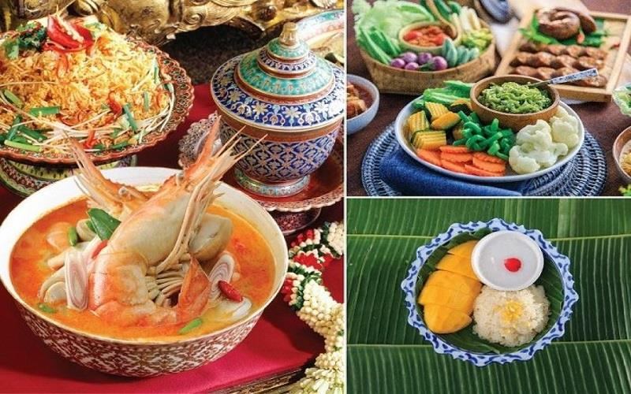
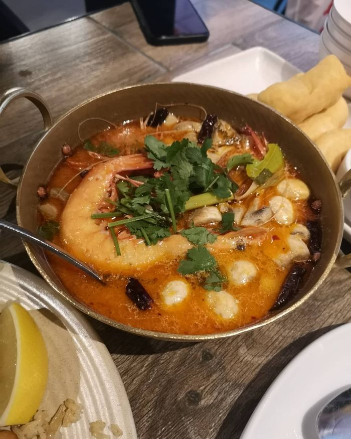
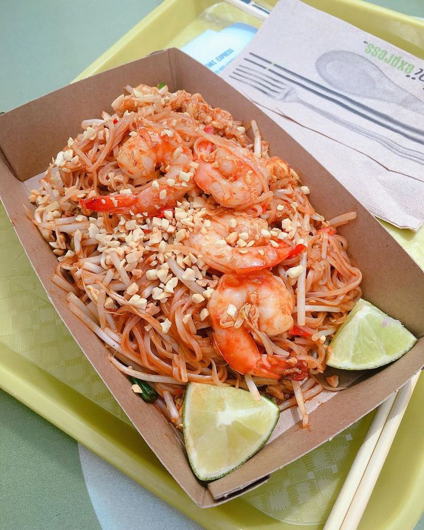
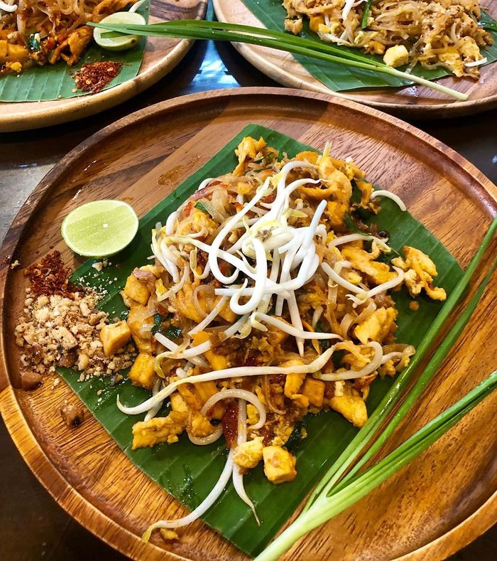
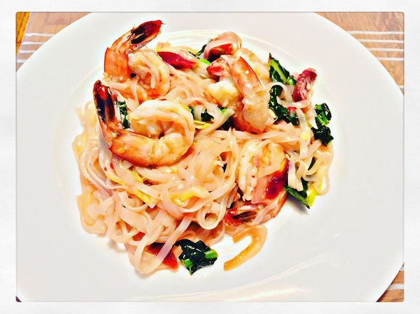
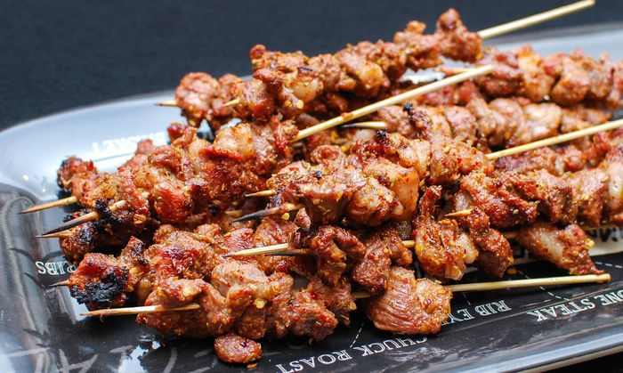
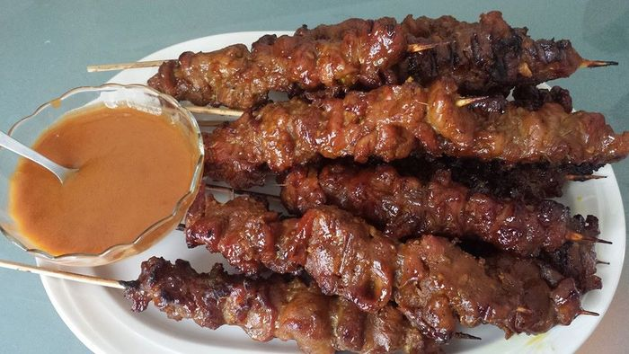

Những món ăn đặc trưng của món ăn Thái
Ẩm thực xứ sở Chùa Vàng có sự kết hợp giữa nhiều nền văn hóa của các nước lân cận như Ấn Độ, Trung Quốc, Myanmar,
Indonesia… Tuy nhiên, ẩm thực Thái không hề bị hòa tan hay lu mờ trước ẩm thực của các quốc gia này mà tự tạo nên
cho mình một nét riêng, độc đáo và hấp dẫn.
Món Thái mang nét gần gũi và tương đồng với món Việt. Những vị chua, cay, ngọt, đắng, làm hấp dẫn thực khách Việt.
Hiện nay, nhu cầu kinh doanh món ăn Thái đã và đang rất phát triển tại Việt Nam.

Những Món Ăn Mà Khi Ăn Không Thể Quên
1.Tom Yum
Món ngon Thái Lan đầu tiên đứng top 1 trong list 20 món đó chính là tom yum. Theo tiếng Thái Lan
thì “tom” nghĩa là nấu, và “yum” nghĩa là “gia vị chua cay”. Vì thế nên món tom yum này có vị đặc trưng là chua và
cay rất thơm ngon, hấp dẫn.

Một tô tom yum chính gốc ẩm thực Thái Lan sẽ có mùi vị cay nồng của xả, củ riềng, ớt và lá chúc, vị béo béo của
nước cốt dừa và sữa đặc… Hai loại hương vị vừa cay vừa béo này khi kết hợp với nhau nghe có vẻ không đúng lắm,
nhưng khi ăn lâu sẽ rất là “ghiền”.
Tom yum bày bán nhiều ở các quán ăn Thái Lan, có giá từ 70bath/tô hoặc hơn
2.Pad Thái
Món ăn Thái Lan hấp dẫn nhất hiện nay có lẽ chính là pad Thái. Đây là món ăn có thể ăn bất cứ thời điểm nào
trong ngày, không kể mưa hay nắng bởi vì pad thái được bán khắp mọi nơi ở xứ sở chùa Vàng.

Một dĩa pad Thái đầy đủ bao gồm: sợi pad Thái (giống với sợi phở nhưng to và dai hơn), trứng chiên, thịt, tôm,
giá, và hẹ… Đặc biệt là phải có đậu phộng và một lát chanh phía trên.

Cách nấu rất đơn giản, đó là trộn chung tất cả các nguyên liệu lại với nhau và xào trên chảo dầu to lửa. Pad
Thái có rất nhiều cách chế biến nhưng ngon nhất vẫn là Pad Thái bọc trứng.

Pad thái có thể nói là món ăn truyền thống ở Thái Lan, được nhiều du khách rất yêu thích. Giá cả vô cùng phải
chăng chỉ từ 50bath/dĩa.
3.Xiên Nướng
Xiên nướng là món ăn vặt phổ biến nhất ở Thái Lan. Đi dạo khắp các chợ đêm ở Thái, bạn sẽ thấy món ăn này được
bày bán rất nhiều và được ướp những loại gia vị hoàn toàn khác nhau.

Các loại xiên sau khi nướng lên đều được ăn kèm với nước sốt ớt mật ong rất đặc trưng của người Thái. Loại sốt
này có vị vừa cay vừa ngọt, đôi lúc mặn mặn rất thích hợp để ăn với xiên nướng.

Theo những gì bên Thái Lan thì họ bán được Xiên nướng giá rẻ bất ngờ chỉ 8bath/xiên (~5500đ)